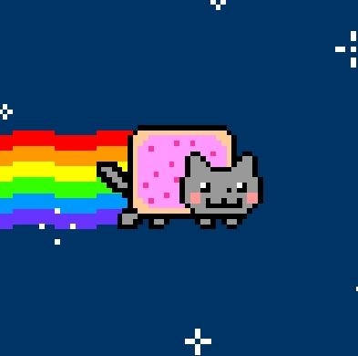

<doctype html>
<html>
<head>
<title>끄투</title>
<meta charset="utf-8">
</head>
<body>
  <h1><a href="index.html">쪼리핑 팬 웹사이트</h1>
  <ol>
    <li><a href="1.html">쪼리핑</a></li>
    <li><a href="2.html">kkutu</a></li>
    <li><a href="3.html">프리서버</a></li>
  </ol>
  <h2>끄투</h2>
  <p><br>
  끄투는 오픈소스형 웹게임으로, 온라인 형태로 이루어져 있다.<br>
  그리고 끄투는 끝말있기 말고도 다른 형식의 게임들도 있는데<br>
  쿵쿵따, 솎솎, 타자연습 등이 있다.</p>
</body>
</html>
